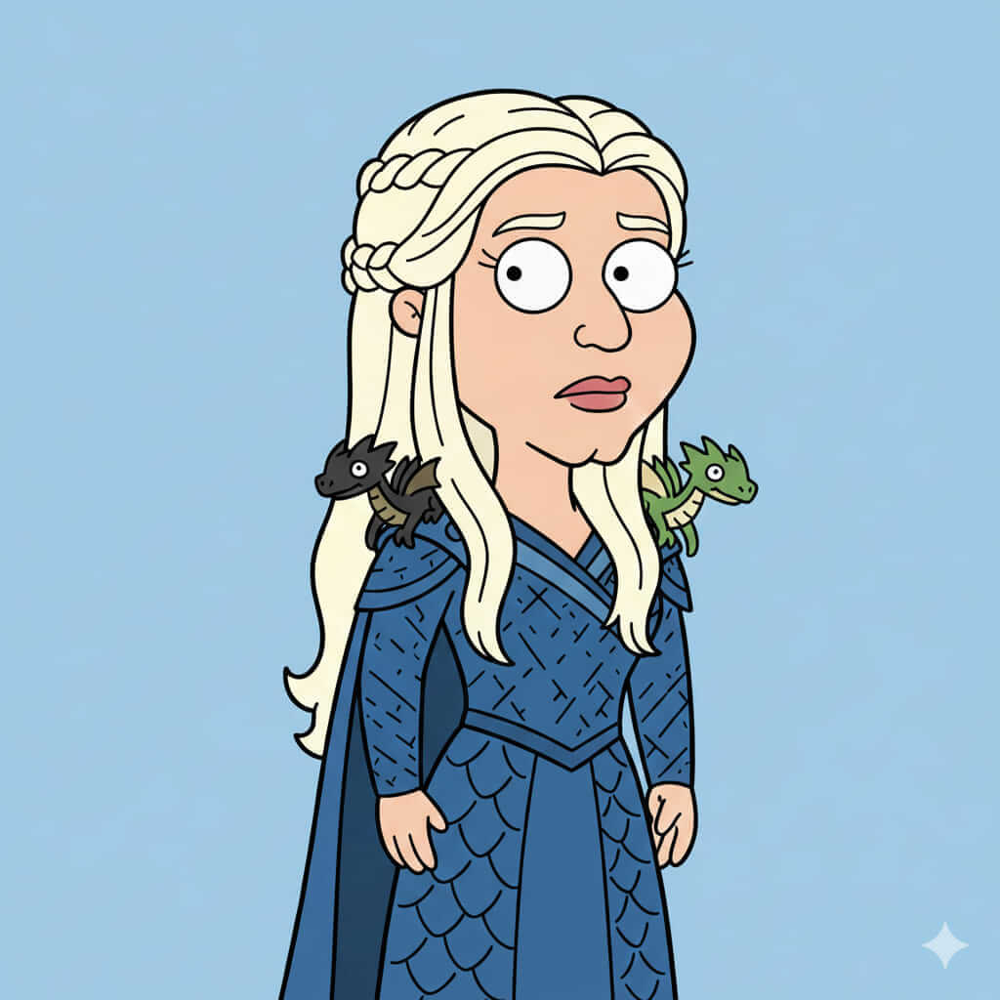

Daeryna Targheris
Historia
Daeryna Targheris nació bajo el fuego de los antiguos volcanes de Throonia, en la ancestral fortaleza de Fulgor Rojo. Desde niña, su destino estuvo marcado por los dragartos alados, bestias temibles que solo reconocen a los dignos de su fuego. Criada entre profecías y libros antiguos, Daeryna desarrolló una voluntad inquebrantable y un espíritu indomable. A pesar de la opulencia y el poder de su casa, su infancia estuvo llena de desafíos: traiciones internas, intentos de asesinato y conspiraciones que buscaban debilitar a los Targheris. Con cada prueba, su fuerza creció, y su vínculo con los dragartos se volvió casi místico, hasta el punto de que su presencia podía despertar a los más dormidos entre ellos.
A medida que Daeryna alcanzó la adultez, comprendió que gobernar Throonia no solo requería fuego y poder, sino también astucia y empatía hacia los pueblos que la rodeaban. Su viaje la llevó a tierras lejanas, donde buscó aliados entre las casas menores y entre los pueblos olvidados del sur, mientras aprendía a equilibrar su ambición con la responsabilidad que su linaje le imponía. La joven Targheris se debate entre cumplir la profecía de grandeza de su familia y evitar la destrucción que su propio fuego podría traer al reino.
Casa y relaciones
Casa: Targheris.
Familia: Descendientes de los dragartos alados, con un linaje marcado por la pasión y la ambición. Padres y hermanos de sangre noble y temperamento feroz.
Aliados: Algunos nobles del sur, mercenarios leales al linaje Targheris, y pueblos que han jurado lealtad por respeto a su poder.
Enemigos: Blackmaw, Vol’shyraen y casas rivales que temen el renacer del poder Targheris.
Habilidades y personalidad
Dominio de dragones y fuego - Voluntad inquebrantable y liderazgo nato - Estratega audaz y capaz de decisiones impetuosas.
Personalidad apasionada, carismática y en ocasiones imprevisible.